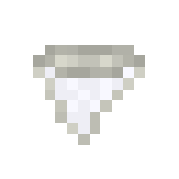
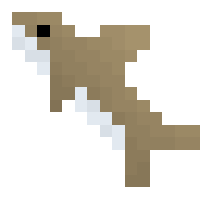

Bull Shark
Bull Sharks is the most aggressive creature in Blue Depths. Although it doesn't attack players on sight, it can easily be
angered and attack players, even if the player does not attack it first. Their mainly spawn in warmer waters, and is the
only shark that can spawn in rivers.
Spawning
Bull sharks can spawn in rivers and lukewarm oceans. The way bull sharks spawn naturally is by replacing some naturally spawning aquatic mob. In the case for lukewarm oceans, there is a chance that a cod can be replaced by a bull shark. For rivers, it is the salmon that can be replaced. The table below shows the spawn rates of the bull shark in the biomes it spawn in.
| Biome | Spawn Chance (Replacement Chance) | Group Size |
|---|---|---|
| Rivers | 8% (Salmon) | 1 |
| Lukewarm Ocean / Deep Lukewarm Ocean | 15% (Cod) | 1 |
Items
Item drop chances
Bull sharks have 3 possible items it can drop upon death. It can drop a Bull Shark Pup, Bull Shark Tooth, and salmon. When the shark dies, it can drop 2 - 3 item "pools" in total, each item can be defined by something called a "roll", so there are a minimum of 2 rolls, and a maximum roll of 3. Below shows a table of the item drop chances:
| Item | Chance | Count |
|---|---|---|
| Bull Shark Tooth | 33.33% | 0 - 1 |
| Bull Shark Pup | 16.67% | 1 - 2 |
| Salmon | 50% | 0 - 3 |
Bull Shark Tooth

The Bull Shark tooth is collectible item exclusively dropped by bull sharks. Players can put it in item frames or keep it in storage.
Behavior and Identification
Identifying the Bull Shark
Bull sharks are the most aggressive sharks in Blue Depths. They are smaller than great white sharks, and have other features that distiguish it from great whites. They are appear bulkier than great whites in their body shape, have a more brown-grey color, and have no overbite like the great whites do. Another important fact is that they spawn in almost completely different environments than great whites. Bull sharks exclusively spawn in rivers and lukewarm (and deep lukewarm) oceans. Although great whites can spawn in lukewarm oceans, they are very rare, and most of the time you will encounter a bull shark than a great white in that biome, and even then the coloration and size differences are very noticeable. When it comes to rivers, you will only encounter bulls sharks there, great whites will never spawn there.
Behavior
As stated before, bull sharks are the most aggressive sharks, even the most aggressive creature overall, in Blue Depths. Unlike great white sharks, bull sharks only have two adult variants, the "passive" and aggressive variant. There is no variant that might give little taps like the stalker variants of the great white, the bull shark will either fully commit to attacking the player or it won't.
Bull shark aggression works a little differently than great white aggression. Great whites may attack players if they are either attacked or if they spawn as a stalker variant. With bull sharks, they can be aggressive if they are attacked, spawn in as an aggressive variant, or if you stick to close to them for too long.
When encountering a bull shark, you need to be extra careful than you would with great white sharks. Bull sharks have a much higher chance of spawning as an aggressive variant. When encountering a bull shark, there is a 35% chance that the bull shark will become aggressive and immediately hunt down and attack the player. They have a smaller follow range than great whites though, only about 25 blocks. They also deal less damage than the great white. When hit, they will give a growl indicating they are aggressive, and this sound is different from the great white's aggressive growl.
Bull sharks are also very territorial too, and will become aggressive if you invade their domain for too long. If a player in water is within 10 blocks of a bull shark, it's aggression timer will increase per second. If the timer reaches 22 seconds, the bull shark will give the player a warning that they need to back off in the form of making a grunting noise and releasing bubbles from its mouth. However, once that timer reaches 30 seconds, the bull shark will immediately become aggressive and start attacking the player, which will be indicated by the bull shark making a growl and angry particles being emitted from it right at the moment it becomes aggressive. This aggression timer is not visible to the player, so they must rely on the shark's warning of when they need to back off, or by counting the time passed themselves. If the player gets out of the water or goes over 10 blocks away from the shark, the aggression timer will start to decrease every second.
Life Cycles and Raising Bull Sharks
Bull Shark Pup (Item)

In order for the player to be able to raise bull sharks, they cannot use a water bucket due to their size. Instead, the player must kill an adult bull shark for a chance to get an item called Bull Shark Pup. The player can place this pup item onto the ground or in a body of water and begin the feeding process to make the bull shark pup to grow. Or they can simply leave it and have a pup as their own personal pet!
Bull Shark Pup (Mob)
Behavior
Bull shark pups will actively attack players, there is no passive variant. It doesn't matter what the conditions are, they will attack no matter what, even if it wasn't hit first. These pups don't pack too much of a bite, and they aren't as insistent as adults, but it is still best to be cautious around these sharks. This behavior contrasts the great white shark pups, who don't attack players ever.
Bull shark pups will never despawn.
Raising into an adult
The bull shark pup is the first phase of a bull shark's life cycle. These pups do not spawn naturally, they can only be obtained when a player or block (like dispensers) places a bull shark pup down. These pups looks just like adult bull sharks, except they appear much smaller. These fish have to potential to grow into mature bull sharks by giving it food to accelerate its growth. Unlike most other mobs in Blue Depths, this pup cannot grow up by itself through the passage of time, instead the player must actively be involved in feeding the pup to make it grow.
For these pups to grow up to become an adult, the player must feed the pup food. There are three options of food the shark will eat: salmon, raw largemouth bass, and tropical fish. Unlike with vanilla mobs, Blue Depth mobs will not eat if you "use" an item on them, instead you must throw/drop the item close to them. Each food source that you give the pup varies in how much it helps making it reach maturity.
If the player wishes just keep the pup as a pet, all the player has to do is simply never feed it.
Below shows a table on how each method helps accelerate it's growth to maturity:
| Method | Growth Progress | Amount Required for Near-Instant Growth |
|---|---|---|
| Raw largemouth bass (Item) | 14% | 8 bass |
| Salmon (Item) | 10% | 10 salmon |
| Tropical Fish (Item) | 6% | 17 tropical fish |
Bull shark pups don't drop anything on death.
History
Development History
| Datapack Version | Addition/Change |
|---|---|
| 1.1.0 (Roaring Rivers Part 1: Below the Surface) |
|
Gallery